Le operazioni di cui vogliamo analizzare il costo sono:
Per stimare il costo di ogni singola operazione, è essenziale avere due tabelle di stima. La prima è la tabella dei volumi, mentre la seconda è la tabella delle operazioni. Entrambe le tabelle faranno quindi parte della documentazione della base di dati.
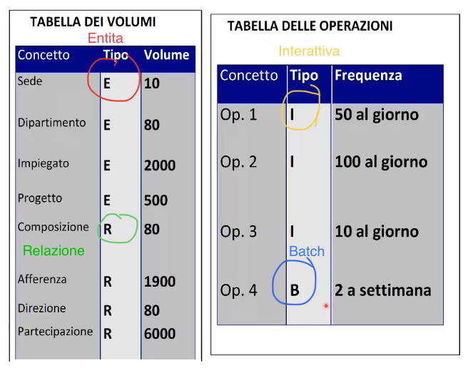Avendo a disposizione questi dati è possibile stimare i costi di ogni operazione.
Vediamo come fare correttamente la stima del costo dell'operazione 2.
Analisi della richiesta
Trova i dati di un impiegato, del dipartimento nel quale lavora e dei progetti in cui è coinvolto
Tavola degli accessi
Per fare questa operazione dobbiamo:
Tutto viene riassunto in una tavola degli accessi.
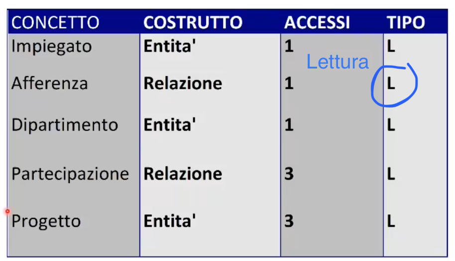Il costo totale dell'operazione è dato dalla somma di tutti gli accessi, che in questo caso è 9.
Ricordiamoci anche che essendo le operazioni di scrittura più onerose di quelle di scrittura 1S=2L.
Una volta analizzato il costo di tutte le operazioni, procediamo con la ristrutturazione. Questo processo si divide in:
Analisi delle ridondanze
In generale l'analisi di tutti quegli attributi derivabili da altre entità o relazioni.
Consideriamo l'esempio Città-Persona per l'anagrafica di una regione:
Come è possibile vedere nello schema E-R il numero di abitanti rappresenta una ridondanza, infatti può essere preso sia da città che contanto gli N Persona della relazione Residenza. In tutti i casi in cui c'è ridondanza il problema è sempre uno: Eliminare o lasciare? Entrambe le scelte presentano vantaggi e svantaggi. Per aiutarci nella scelta viene fatto, li dove è presente ridondanza una valutazione sull'indice di prestazione.
Valutiamo l'indice di prestazione per l'attributo Numero abitanti per ogni singola operazione:
Considerando gli accessi in scrittura 1S=2L abbiamo un numero totale di accessi per entrambe le operazioni di 3500.
Considerando gli accessi in scrittura 1S=2L abbiamo un numero totale di accessi per entrambe le operazioni di 12000. Quindi 8500 in più rispetto al caso di ridondanza.
La versione con ridondanza, seppur occupa 1 kilobyte (considerando 4 byte per ogni entità Città per il numero abitanti) in più rispetto a quella senza, è conveniente da attuare rispetto quello senza.
In questo caso conviene lasciare la ridondanza.
Ovviamente, come verificato per l'esempio, la versione con ridondanza occuperà sempre spazio in più.
Eliminazione delle gerarchie
Il modello relazionale non implementa le gerarchie, introdotte invece nello schema E-R, allora bisogna eliminarle; questo è possibile tramite tre strategie.
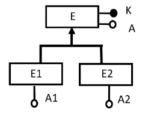Mantenimento delle entità
Tutte le entità figlie vengono mantenute e sostituiamo alle gerarchie delle associazioni. Ogni entità viene identificata dalla relazione.
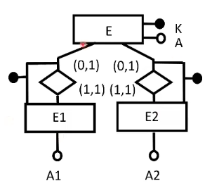Collasso verso l'alto
Si rimuovono le entità figlie riunendo tutti gli attributi di queste nell'entità padre.
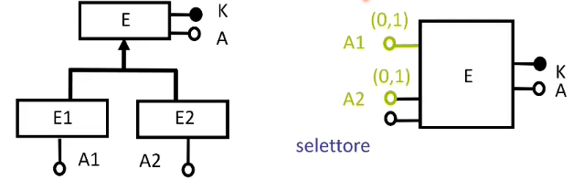Collasso verso il basso
Si elimina l'entità padre trasferendo tutti i suoi attributi nelle entità figlie. Si tratta di una strategia molto utile in tutte quelle situazioni in cui le entità figlie hanno molti più attributi dell'entità padre. Questa strategia è vietata sempre nel caso di gerarchie non totali perchè andremo a perdere dati. Infatti , avendo ad esempio una gerarchia non totale Cittadino/Pestatore-Cacciatore, in cui abbiamo cittadini che esistono e possono non essere ne cacciatori ne pescatori, applicando questo collasso, ci andiamo a perdere totalmente tutti i cittadini che sono solo cittadini. Quindi si rischia la perdita di tutti i dati relativi alle entità che fanno parte della classe padre perchè sono ammesse (dopo il collasso verso il basso) solo entità che fanno parte delle classi figlie.
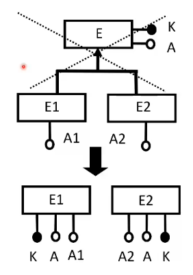Partizionamento di Entità
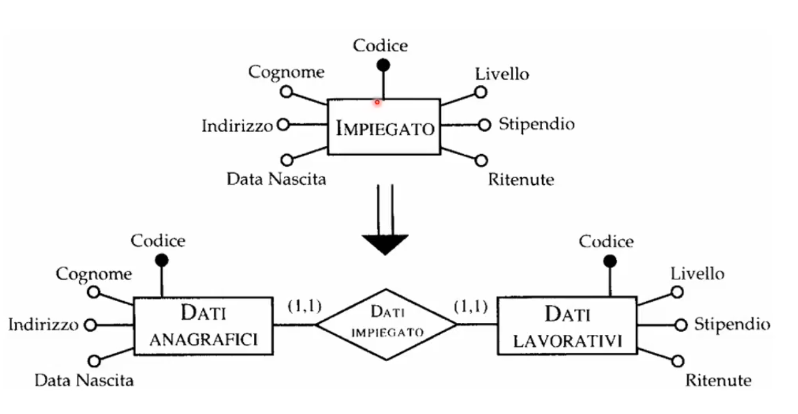Immaginiamo di avere un'entità dipendente a cui accediamo sempre o ai dati anagrafici oppure ai dati lavorativi. Allora potremmo secondo il partizionamento di Entità e associazioni, dividere questi aspetti e trattare il dipendente come se fosse una relazione tra le due tipologie di dato.
Il partizionamento appena fatto viene detto partizionamento verticale.
Specificatamente per il modello relazionale, non abbiamo il supporto di attributi multivalore, ad esempio, se abbiamo un'entità Agenzia a cui poter associare secondo lo schema E-R più numeri di telefono (1,n), non possiamo tradurre questa necessità in uno schema di tipo relazionale, allora in questi casi, usiamo un partizionamento orizzontale.
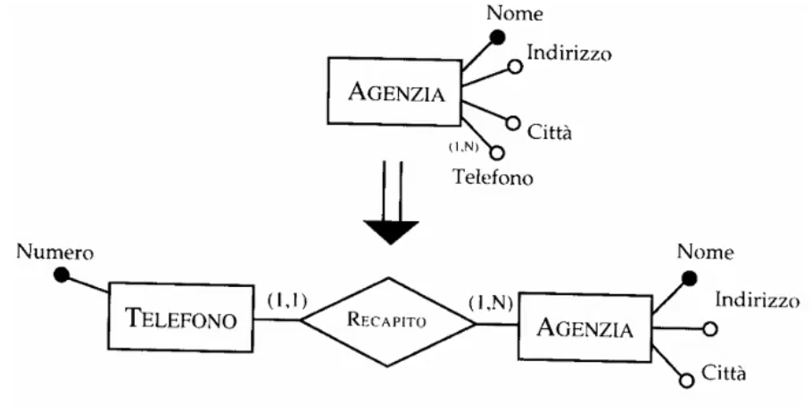Quello che facciamo con questo tipo di partizionamento è sostituire tutti gli attributi multivalore ((1,n)) con relazioni (1,n).
Accorpamento di entità
Si tratta di una procedura inversa rispetto la precedente.
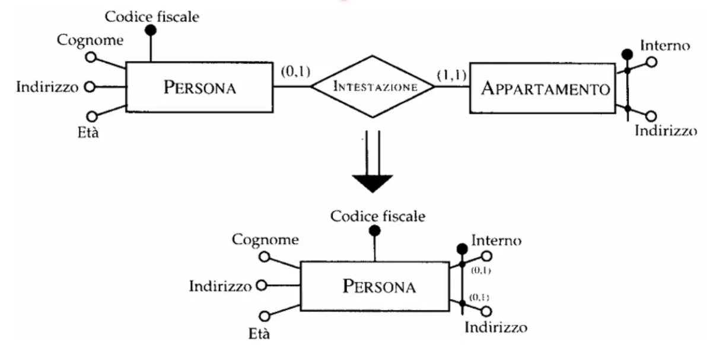Solitamente l'accorpamento è giustificato se le operazioni più frequenti su Persona richiedono i dati relativi ad appartamento.
Gli accorpamenti si fanno solitamente su relazioni uno ad uno, è raro che si facciano in relazioni uno a molti, è invece vietato farli per relazioni molti a molti.
Facendo un accorpamento molti a molti andremo infatti ad introdurre ridondanza perchè avremmo più copie delle stesse informazioni.
Traduzione e scelta degli identificatori principali
Sia entità che relazioni dello schema E-R vanno tradotte nel modello relazionale in "tabelle".
Traduzione di entità molti a molti
Usiamo la traduzione standard
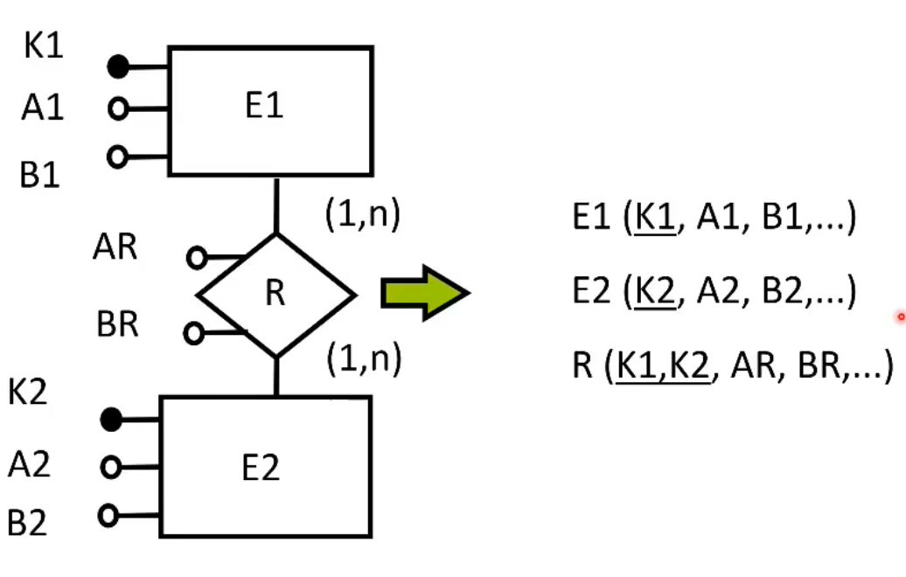Traduzione di entità uno a molti
Resta valida la traduzione standard
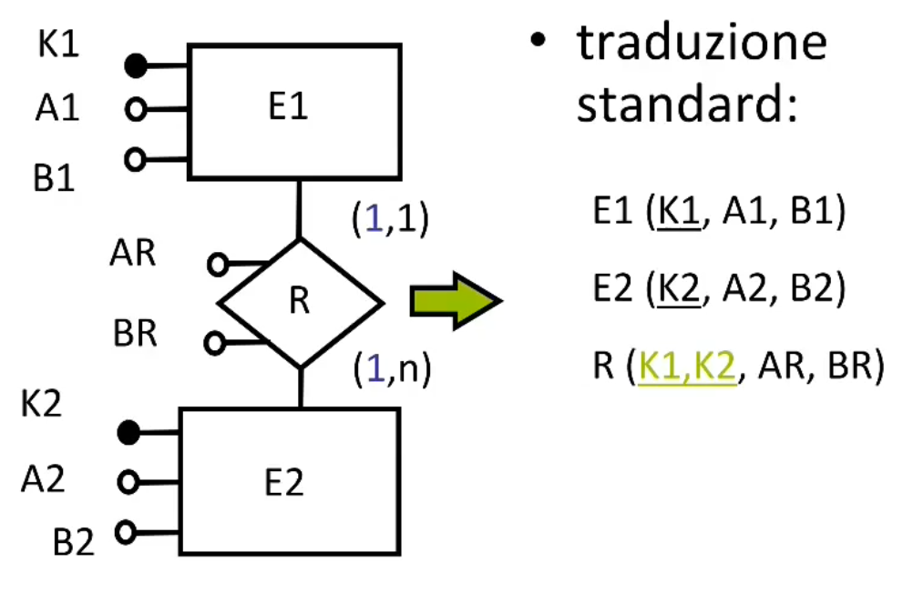Secondo questa procedura anche le relazioni verranno tradotte in tabella. La coppia formata dalle due chiavi nella relazione, rappresenta il legame tra le entità.
Una procedura alternativa a quella standard in questo tipo di relazione potrebbe essere quella che ci da come risultato:
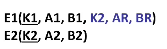Se E1 partecipa con cardinalità (0,1) allora la soluzione conterrà in K2,AR,BR valori nullable.
Traduzione di entità 1 a 1
Per le entità 1 a 1, non viene usata solitamente la traduzione standard, perchè per queste associazioni abbiamo come risultato un'unica tabella.
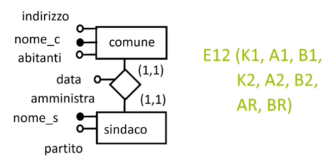